StableForm-TTS
Overcoming Catastrophic Mispronunciation in Diffusion-Based Zero-Shot Speech Synthesis via Stable Formant Generation
INTERSPEECH 2024 Under Review.Abstract. Diffusion models have achieved remarkable success in text-to-speech (TTS), even in zero-shot scenarios. Recent efforts aim to address the trade-off between inference speed and sound quality, often considered the primary drawback of diffusion models. However, we have found a critical mispronunciation issue is being overlooked. Our preliminary study reveals the unstable pronunciation resulting from the diffusion process. Based on this observation, we introduce StableForm-TTS, a novel zero-shot speech synthesis framework designed to produce robust pronunciation while maintaining the advantages of diffusion modeling. By pioneering the adoption of source-filter theory in diffusion TTS, we propose an elaborate architecture for stable formant generation and dynamic prosody generation. Experimental results on unseen speakers show that our model outperforms the state-of-the-art method in terms of pronunciation accuracy and naturalness, with comparable speaker similarity.
Model Overview
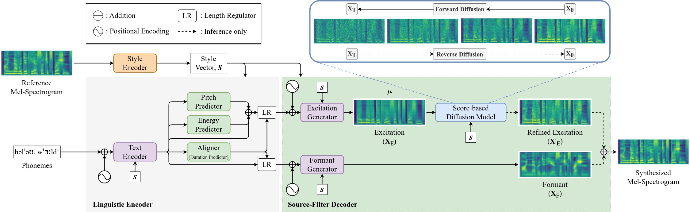
The overview of StableForm-TTS. For brevity, the phoneme, pitch, and energy embedding layers are omitted.
Source-Filter Decomposition
StableForm-TTS synthesizes audio through excitation and formant pathways, and combines them for final output. Below are inference samples from both seen and unseen datasets, generated using the ML solver with 10 steps.
| Speaker | Text | Reference | Ground Truth | Excitation (𝜇) | Refined Excitation | Formant | Final Output |
|---|---|---|---|---|---|---|---|
|
LibriTTS-R: 1183 (seen) |
The best physicians in America could do nothing for him. |
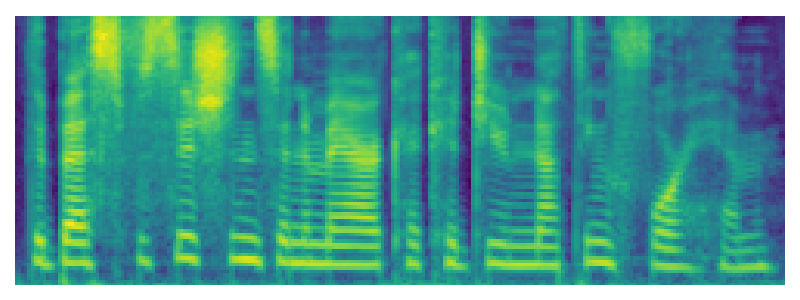 |
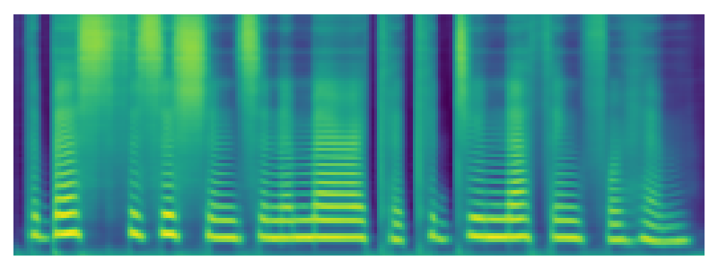 |
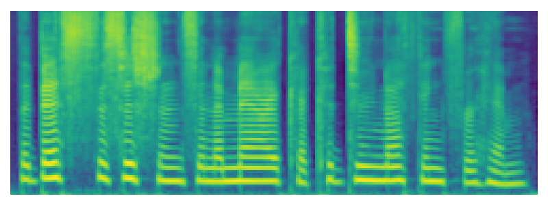 |
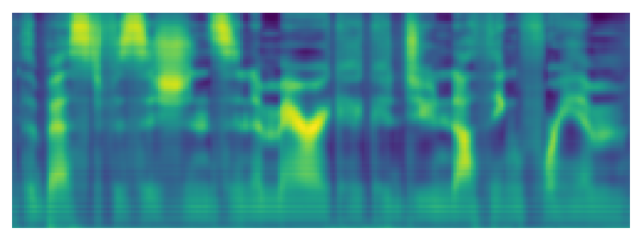 |
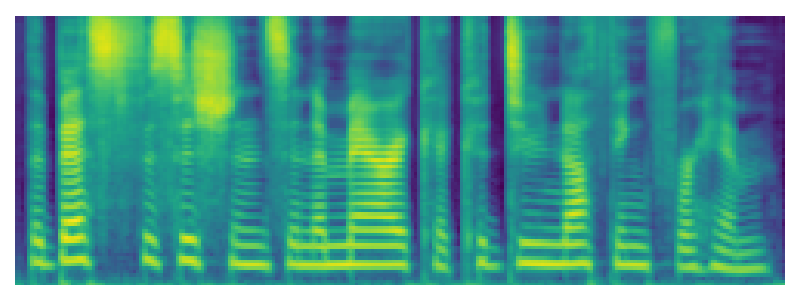 |
|
|
VCTK: 238 (unseen) |
Five years later, the deception continued. |
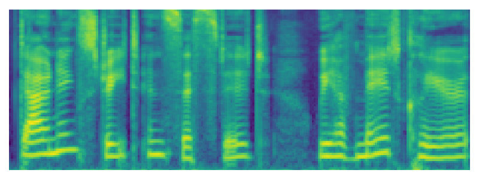 |
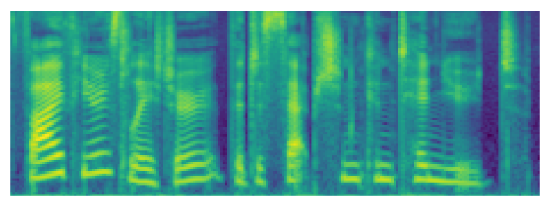 |
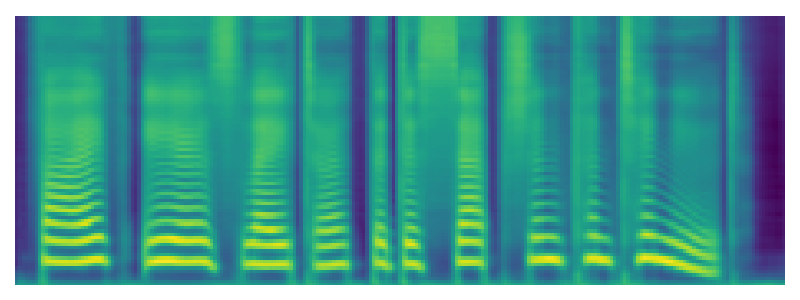 |
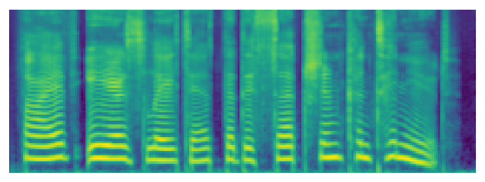 |
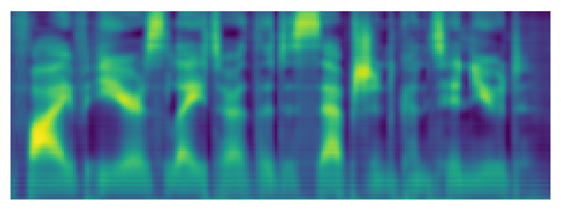 |
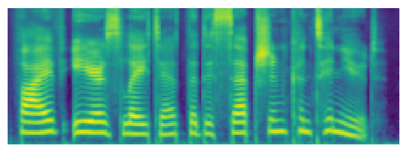 |
Visual Comparison (VCTK dataset)
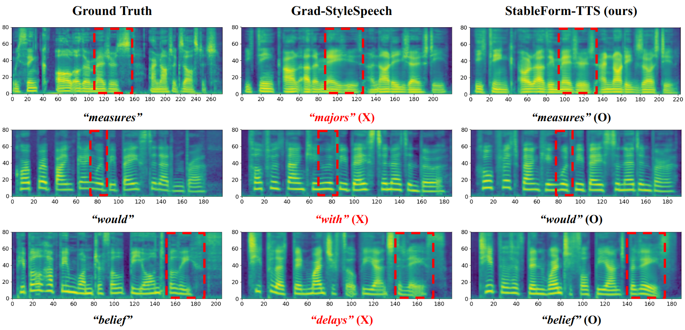
The examples of pronunciation improvement in zero-shot scenarios. The text beneath the mel-spectrogram indicates the ASR model’s transcription of the area enclosed within the red dotted box. We use the ML solver with 10 steps.
| Speaker | Text | Ground Truth | Grad-StyleSpeech | StableForm-TTS (ours) |
|---|---|---|---|---|
| 245 | We think all other measures are not exhausted. | |||
| 261 | Corporate banking would be based in Edinburgh. | |||
| 238 | People have been wonderful beyond belief. |
Zero-Shot Speech Synthesis (VCTK dataset)
| Speaker | Text | Reference | Ground Truth | Ground Truth (voc.) | Grad-StyleSpeech | StableForm-TTS (ours) |
|---|---|---|---|---|---|---|
| 302 | Of course we make mistakes, but we don't make too many. | PF 10 | PF 10 | |||
| PF 100 | PF 100 | |||||
| ML 10 | ML 10 | |||||
| ML 100 | ML 100 | |||||
| 225 | I always felt that I was in control of the match. | PF 10 | PF 10 | |||
| PF 100 | PF 100 | |||||
| ML 10 | ML 10 | |||||
| ML 100 | ML 100 | |||||
| 234 | Yet the performance was not entirely convincing. | PF 10 | PF 10 | |||
| PF 100 | PF 100 | |||||
| ML 10 | ML 10 | |||||
| ML 100 | ML 100 | |||||
| 347 | Some have accepted it as a miracle without physical explanation. | PF 10 | PF 10 | |||
| PF 100 | PF 100 | |||||
| ML 10 | ML 10 | |||||
| ML 100 | ML 100 | |||||
| 245 | They did not replace it with a conviction for culpable homicide. | PF 10 | PF 10 | |||
| PF 100 | PF 100 | |||||
| ML 10 | ML 10 | |||||
| ML 100 | ML 100 |
Ablation Study (VCTK dataset)
We conduct ablation study using the ML solver with 10 steps.
| Speaker | Text | Reference | Ground Truth | StableForm-TTS (ours) | w/o E-F generators | w/o Energy | w/ Formant cond. |
|---|---|---|---|---|---|---|---|
| 302 | Of course we make mistakes, but we don't make too many. | ||||||
| 234 | Yet the performance was not entirely convincing. | ||||||
| 248 | It's also important that they are not seen as a soft option. |